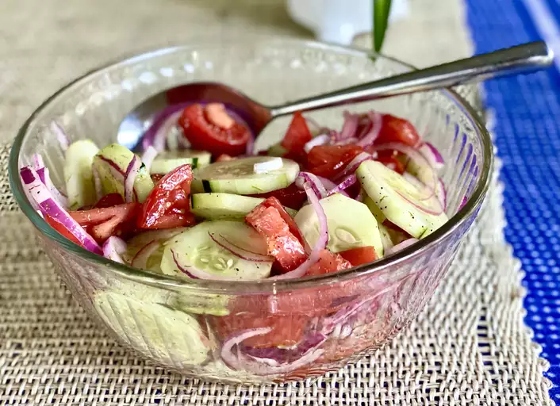

Marinated Cucumber, Onion, and Tomato Salad

Description
This recipe for Marinated Cucumber, Onion, and Tomato Salad has most of the ingredients right there in the title. Cool, crisp cucumbers and juicy ripe tomatoes are teamed up with onions in a satisfying mix of flavor and texture. But what pulls this dish together is the tart and tangy salad dressing made of water, vinegar, oil, sugar, salt, and pepper.
Ingredients
- Cucumber
- Tomatoes
- Onions
- Vinegar
- Oil
- Sugar
Directions
- gather all the ingredients
- Whisk oil, vinegar, salt, pepper, and sugar together in a bowl.
- Add cucumbers, tomatoes, and onion to the bowl. Stir to coat.
- Cover bowl with plastic wrap and refridgerate for at least 2 hours.
- Enjoy!